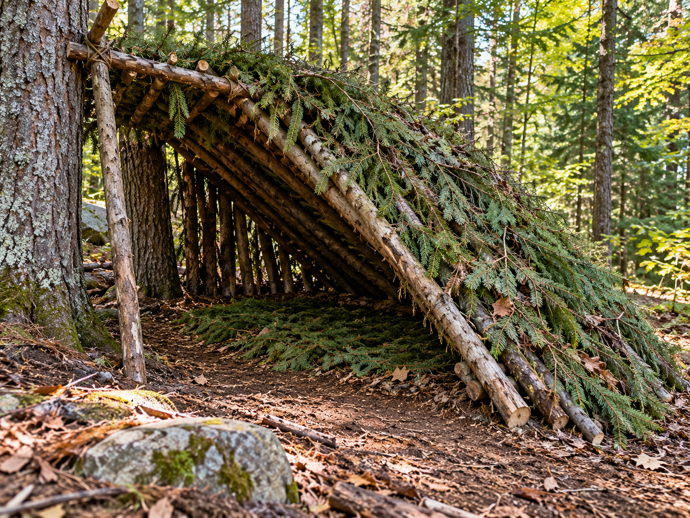

Lean-to Shelter

A lean-to is a simple outdoor shelter with a sloping roof.
What It Is
A lean-to shelter has a roof that slopes from a higher support down toward the ground. The roof can be covered with available materials to provide protection.
When to Use It
A lean-to can provide basic protection from wind, light rain, and direct sunlight when spending time outdoors.
How It Works
A strong horizontal support is used as the main part of the shelter. Smaller branches can lean against it to create the roof. The roof can then be covered.
Materials Needed
- Strong support
- Branches or poles
- Leaves or other covering
- Cord if available
Source
Outdoor preparation and shelter information: National Park Service - Ten Essentials